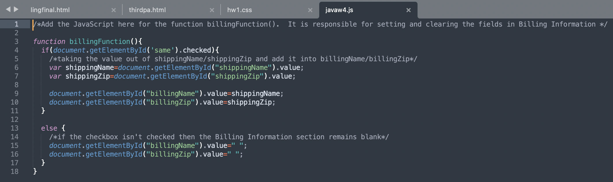

實作一：第二週課程project
此project為寫程式將滑鼠移到網站下方的三張圖片後可以在上方紫色區塊顯示滑到那張圖的alt text

This is why
此project為寫程式將滑鼠移到網站下方的三張圖片後可以在上方紫色區塊顯示滑到那張圖的alt text
這個project的目標為設計一個程式，讓填表單的人若按下"Is the billing message the same前的勾<，程式會自動幫下面兩欄填入相同的資訊
javascript 對我比較抽象 有些function一開始也不知道要怎麼設項最後一個project就在腦袋停留了兩天 但做出來的效果讓網頁更精緻！